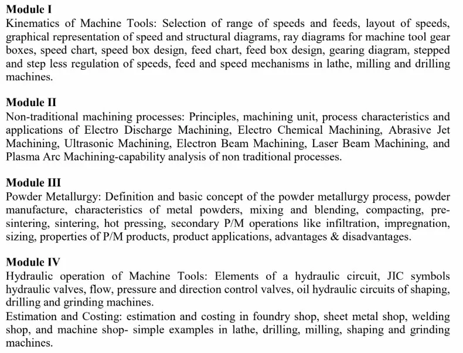

📚 Study Resources
All lecture notes, reference PDFs, and syllabus for ME 19-205-0806 Production Technology (2019 Scheme). Prof. Pramod (PRK) — Modules 1 & 2 · Prof. Jinu (JNM) — Modules 3 & 4.
Syllabus
Course Syllabus
ME 19-205-0806 Production Technology — 2019 Scheme, VIII Semester. Covers all 4 modules with CO mapping and mark distribution.
🔎 View Syllabus

Prof. Pramod (PRK) — Module 1 & 2 Notes
PT Module 1 — Kinematics of Machine Tools
Types of motion, speed/feed selection, stepped regulation, progression ratio, preferred numbers (R5–R80), gear box design basics.
📥 Open PDF
Ray Diagrams
Geometric progression, step ratio, ray diagram construction rules, structural formula derivation, solved problems for 6/9/12-speed gear boxes.
📥 Open PDF
Module 2 — Non-Traditional Machining
Full NTM reference: AJM (MRR model, process parameters), USM (M.C. Shaw model), WJM, classification, comparison tables.
📥 Open PDF
Electric Discharge Machining (EDM)
EDM working principle, dielectric fluids, spark generators (RC circuit and transistorized), process parameters, MRR formula, applications.
📥 Open PDF
Ultra Sonic Machining (USM)
USM principle, setup components, M.C. Shaw model, factors affecting MRR, transducer materials, applications.
📥 Open PDF
Electron Beam Machining (EBM)
EBM principle, electron gun, vacuum requirement, beam focusing, process parameters, advantages and applications.
📥 Open PDF
Laser Beam Machining (LBM)
LBM principle, types of lasers (Ruby, CO₂, Nd:YAG), beam focusing, process parameters, LBM vs EBM comparison.
📥 Open PDF
Plasma Arc Machining (PAM)
Plasma arc torch, transferred vs non-transferred arc, temperature (28,000°C), process parameters, applications for hard alloys.
📥 Open PDF
Ion Beam Machining (IBM)
IBM principle, ion source, ion beam characteristics, sputtering mechanism, applications in microfabrication and thin films.
📥 Open PDF
Prof. Jinu (JNM) — Module 3 & 4 Notes
PT Module 3 — Powder Metallurgy
Complete P/M coverage: powder production (atomization, electrolysis, reduction), characteristics (shape/size/flow/compressibility), mixing, compacting, sintering, secondary operations, applications.
📥 Open PDF
Module 4 — Hydraulic Operations of Machine Tools
JIC symbols, hydraulic valves (pressure/flow/direction control), circuits for shaper/drilling/grinding machines, pump and motor selection.
📥 Open PDF
Production Cost Estimation
Foundry shop costing (pattern/sand/mould/melting/fettling sections), welding shop costing, machine shop costing (lathe/milling/drilling/shaping), sheet metal shop costing — with solved numericals.
📥 Open PDF
Important Questions
Important Questions — All Modules
11 high-probability exam questions across all 4 modules as identified from PYQ analysis and syllabus focus areas.
📄 View Notes
Quick Access to Module Notes
Module 1 Study Notes
Kinematics, ray diagrams, gear box design — with solved problems and PYQ answers.
→ Open Notes
Module 2 Study Notes
EDM, ECM, AJM, USM, EBM, LBM, PAM, IBM — with diagrams and PYQ answers.
→ Open Notes
Module 3 Study Notes
Powder metallurgy: atomization, compaction, sintering, self-lubricating bearings — with PYQ answers.
→ Open Notes
Module 4 Study Notes
Hydraulic circuits (shaper, drilling, grinding), cost estimation — with solved numericals and PYQ answers.
→ Open Notes